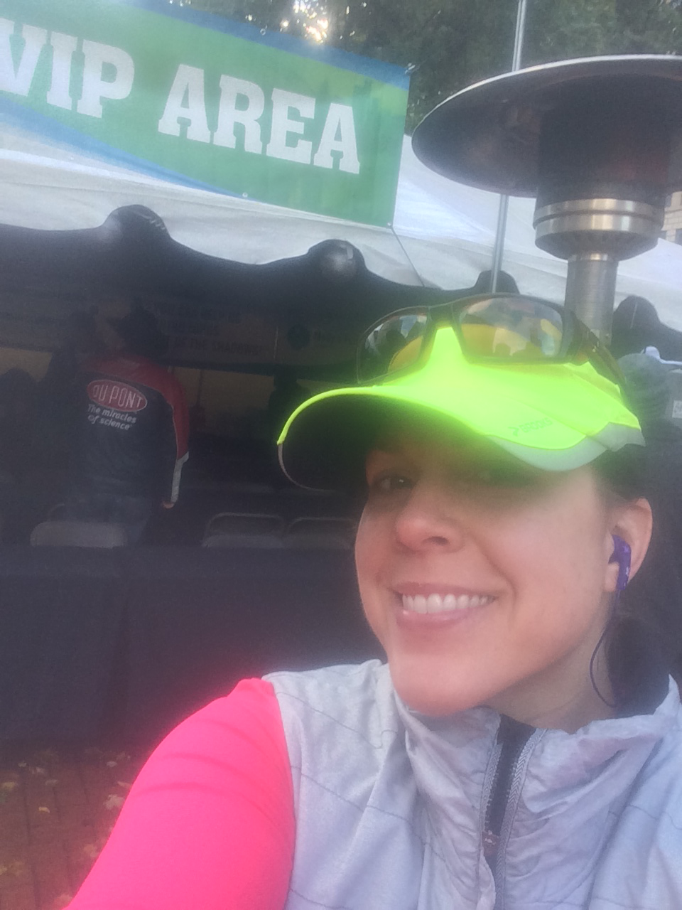

About Lysa Webb, MA LPC
 Hi! My name is Lysa Webb and I’m a Licensed Professional Counselor (LPC).
I’ve been in private practice for a few years but have been doing therapy in various environments for over 15 years.
I earned my Bachelor’s Degree in Psychology, as well as a degree in Human Development, at the University of Utah, then spent several years working in residential settings.
I went back to school to obtain my Master of Arts Degree in Counseling Psychology at Lewis and Clark College.
Hi! My name is Lysa Webb and I’m a Licensed Professional Counselor (LPC).
I’ve been in private practice for a few years but have been doing therapy in various environments for over 15 years.
I earned my Bachelor’s Degree in Psychology, as well as a degree in Human Development, at the University of Utah, then spent several years working in residential settings.
I went back to school to obtain my Master of Arts Degree in Counseling Psychology at Lewis and Clark College.
Following graduation I went back to work in a child and adolescent residential center.
After several years in residential work I shifted my focus to community mental health, doing crisis intervention for individuals in the community.
I have experience working with all age groups affected by various mental illnesses ranging from depression to Schizophrenia, using strength based concepts and individualized treatment plans to bring out the best in my clients.
I specialize in working with young children ages two and up utilizing play therapy.
As Plato stated, “You learn more about a person in an hour of play than in a year of conversation.”

I enjoy various activities, including running, and have done many half marathons.
I did take part in the Portland Marathon…once!
I enjoy playing basketball and coach middle school girls’ basketball in the winter.
Traveling the world to see rare and exotic locales is one of my favorite activities.
My favorite place so far is Prague, Czech Republic, but my dream vacation would be to Australia!
I have three teenagers and cat named Whiskers.